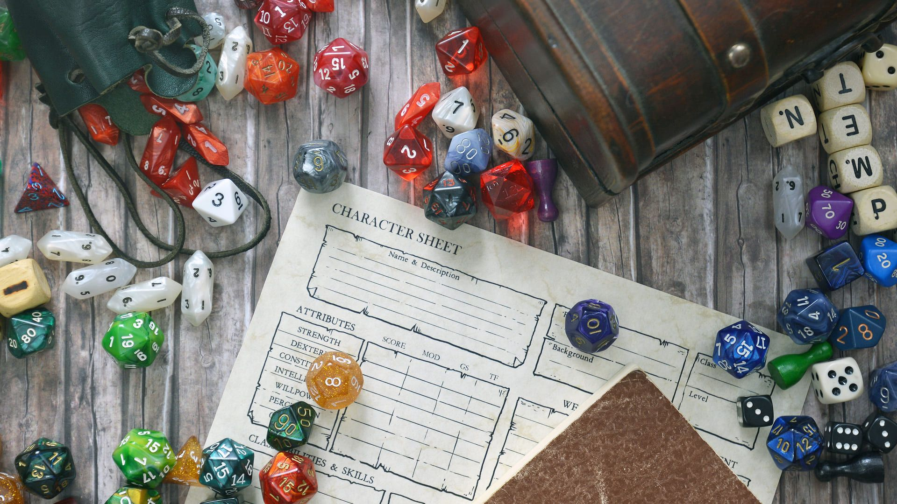
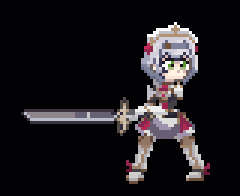

O que é Genshin Impact?

Genshin inpact é um jogo de RPG de mundo aberto com exploraçao livre em um grande mapa
com varias missoes e desafios e um sistema de batalha com seu diferencial em o uso de elementos e troca de personagens
feito pela empresa miHoYo que tambem é dona dos jogos da franquia honkai
Um jogo no qual o seu diferencial é ser 'free to play' gratis para baixar e jogar mas com microtransações que são
de duas formas o ''gacha'' e com o passe de batalha
O que é RPG de mesa?

Um RPG de mesa, também conhecido como RPG de papel e caneta, é uma classificação para um RPG
no qual os participantes descrevem as ações de seus personagens por meio da fala.
CLIQUE NO BOTÃO ABAIXO PARA SABER MAIS SOBRE ESSE PROJETO
Saiba mais
Clique no gif para voltar para o Menu
